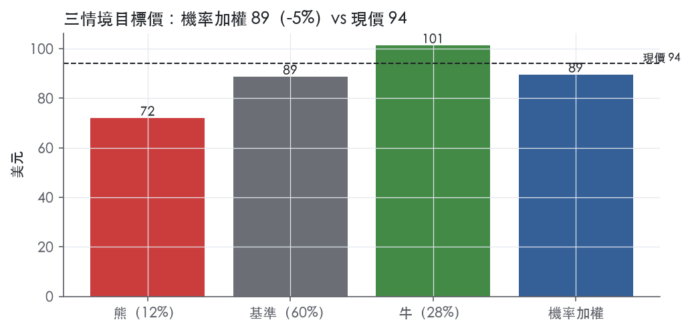
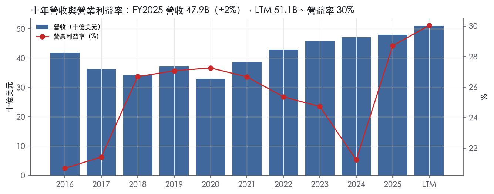
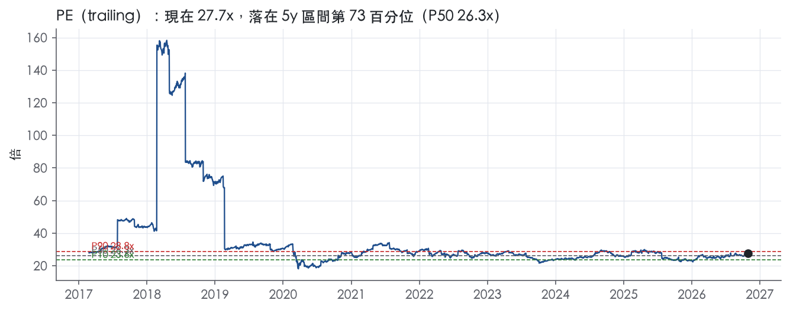
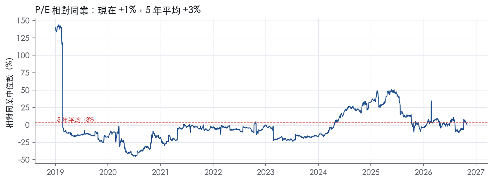
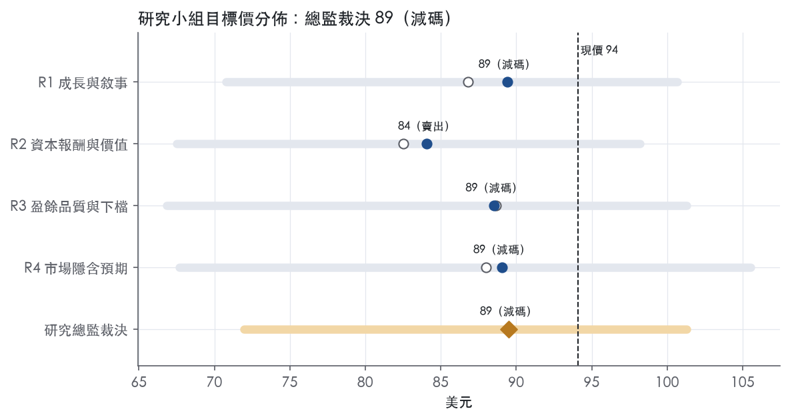
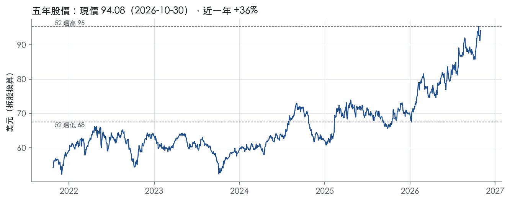

評等總表 › 必需消費 › KO
盈餘水位高於基準模型但一年內成長降檔，持平賺息、相對同業減碼｜評等 減碼｜目標價 89
| 報告日 | 評等 | 目標價 | 當時股價 | 超額報酬 |
|---|---|---|---|---|
| 2026-10-30 | 減碼 | 89.49 | 94.08 | -12.6% |
| 2026-10-09 | 減碼 | 90.30 | 88.05 | -5.3% |
| 快評 | 動作 | 結論 |
|---|---|---|
| 2026-10-27 | 提前重開研究小組 | 淨利高於預測，箱量轉正破壞論點 |
| 評等 | 減碼（邊界，鄰近賣出） |
| 12 個月目標價 | 89 美元 |
| 現價 | 94.08 美元（2026-10-30） |
| 預期報酬 | 股價 -4.9%＋股息 2.2%＝總報酬 -2.6%；同業籃門檻 10.0%，超額 -12.6% |
| 估值方法 | P/E 24.5x，套在第 5–8 季的EPS（也就是一年後的未來四季） |
| 三情境 | 熊 72／基準 89／牛 101 |
| 研究流程 | 四位研究員兩輪辯論＋研究總監裁決 |
| 資料來源 | SEC EDGAR XBRL、Tiingo、FRED（全免費） |
盈餘水位高於基準模型但一年內成長降檔，持平賺息、相對同業減碼（研究總監裁決，四位研究員兩輪辯論後）
評等 減碼（邊界，鄰近賣出）｜12 個月目標價 89 美元（總監三情境機率加權 90 與研究員中位數 89 各半）｜現價 94.08（2026-10-30）
預期報酬：股價 -4.9%＋股息 2.2%＝總報酬 -2.6%。同業籃門檻 10.0%，超額 -12.6%，離賣出的分界不到三個百分點，屬邊界評等（落在其他級距的機率約三成）。
估值方法：P/E 24.5x，套在第 5–8 季的EPS（也就是一年後的未來四季）。三情境：熊 72（12%）／基準 89（60%）／牛 101（28%）。
立場中性而評等減碼：評等看的是「預期總報酬 -2.6% − 同業籃門檻 10.0%」＝超額 -12.6%，不是絕對漲跌；中性但超額偏離門檻，代表情境機率或股利把報酬推離門檻。
什麼會讓研究總監改變看法：FY2027 財測有機成長 ≥7% 且價格／組合回到 +3、FY2026Q4 淨利不低於 2.0B，營益率代理上修至 37.0%、倍數移向帶 P75 轉多；FY2026Q4 淨利低於 2.0B 或 IRS 出現適用往後年度的判決，營益率代理退回 36.0% 以下、倍數退回 P25 轉空。
| 過去四季（實際，FY2026Q3） | 未來四季 | 第 5–8 季 | 第 9–12 季 | |
|---|---|---|---|---|
| 營收（B） | 51.1B | 53.4B | 56.3B | 59.1B |
| 營收成長 | 7.1% | 4.5% | 5.5% | 5.0% |
| 營業利益率 | 30.0% | 36.5% | 36.5% | 36.5% |
| EPS（美元） | 3.40 | 3.42 | 3.62 | 3.81 |
| EPS 成長 | 12.5% | 0.6% | 5.9% | 5.4% |
| 每股股息（美元） | 2.10 | 2.10 | 2.10 | 2.10 |
| P/E（現價） | 27.7x | 27.5x | 26.0x | 24.7x |
| 股息殖利率（現價） | 2.2% | 2.2% | 2.2% | 2.2% |
過去四季為申報數字；預測為研究總監的假設、程式計算。倍數與殖利率都用現價計算，用來看現價對應各期獲利的高低。
| 項目 | 上次（2026-10-12） | 這次（2026-10-31） | 變動 |
|---|---|---|---|
| 評等 | 減碼 | 減碼 | ＝ |
| 機率加權目標價（美元） | 90 | 89 | -0.9% |
| 超額報酬 | -5.3% | -12.6% | -7.3 pp |
| 目標倍數 | 25.6x | 24.5x | — |
| 未來四季營收成長 | 4.5% | 4.5% | +0.0 pp |
| 未來四季營益率 | 36.5% | 36.5% | +0.0 pp |
| 未來四季 EPS（美元） | 3.34 | 3.42 | +2.1% |
| 熊／基準／牛機率 | 13／61／26 | 12／60／28 | — |
程式計算；「未來四季」各自從當次報告的資料起點算。研究總監逐點說明見第八章「與上次報告比較」。
| 情境 | 機率（歷史） | 故事 | 未來四季營收成長 | 第 5–8 季營益率 | 倍數 | 目標價 | 股價漲跌 |
|---|---|---|---|---|---|---|---|
| 熊 | 12%（15%） | 風險表第 1 條拉美匯率反轉、第 2 條投入成本通膨、第 4 條 EMEA 份額流失擴大，加 IRS 稅務爭議稅率升至 19.5%；倍數落到帶 P25 | 2.5% | 34.5% | 22.6x | 72 | -23.5% |
| 基準 | 60%（56%） | 少一週、世界盃與匯率基期使 NTM 報表成長降到 4.5%、EPS 近乎持平一年，Q5–Q8 回到 6–7% 成長；前瞻倍數回到偏誤已修正後的帶中心，價格略跌、賺股息 | 4.5% | 36.5% | 24.5x | 89 | -5.8% |
| 牛 | 28%（29%） | 無賽事下箱量 ≥4%、價格／組合回到 +3，EPS 成長重回雙位數；倍數守在帶 P75–P90 之間（R3 原值），牛 EPS 已含量價雙升，不再疊 P90 | 6.0% | 37.5% | 26.5x | 101 | 7.7% |
目標價由程式依研究總監的驅動與倍數計算；機率由研究總監給定。括號內是歷史頻率：把這檔股票過去十年 12 個月報酬的波動形狀，置中在基準情境，結果落在各情境附近的比例。

四位研究員用不同方法各自估值，回應研究總監的質疑後交出第二輪，最後由總監逐點裁決。各研究員的主張見第七章，裁決理由見第八章，完整論證見《研究底稿》。
| 立場（一輪→二輪） | 加權目標價（一輪→二輪） | 評等（一輪→二輪） | 第二輪倍數 | 熊～牛目標價 | |
|---|---|---|---|---|---|
| R1 成長與敘事 | 看空→看空 | 87→89 | 賣出→減碼 | 27.0x | 71～101 |
| R2 資本報酬與價值 | 看空→看空 | 83→84 | 賣出→賣出 | 24.1x | 67～98 |
| R3 盈餘品質與下檔 | 中性→中性 | 89→89 | 減碼→減碼 | 24.5x | 67～101 |
| R4 市場隱含預期 | 看空→看空 | 88→89 | 減碼→減碼 | 26.0x | 68～106 |
| 研究總監裁決 | 中性 | 89 | 減碼 | 24.5x | 72～101 |
目標價由程式依各自的驅動與倍數計算；評等＝機率加權總報酬 − 同業籃門檻。
Coca-Cola 是一家全球性非酒精飲料公司，核心商業模式是把濃縮液與糖漿賣給獨立裝瓶夥伴，再由裝瓶系統製造、配送並賣給零售與餐飲通路。公司在 2025 年度向一家裝瓶商銷售額即占淨營業收入 10%，該裝瓶商業務反映在 EMEA 與亞太兩個經營分部¹。LTM（至 FY2026Q3）營收 51.05B 美元、EBITDA 16.36B 美元，是一家規模龐大、現金流穩定的消費品公司。公司近年已直接進入酒精飲料品類，在美國以外多個市場直接經營，並在美國成立防火牆式子公司透過第三方製造與配送酒精產品¹。客戶端除裝瓶夥伴外，公司也強調其正持續投資數據分析、人工智慧與機器學習以強化行銷與創新能力，藉此理解並維持消費者興趣與品牌忠誠度¹。
公司依地理劃分五大經營分部：EMEA、Latin America、North America、Asia Pacific 與 Bottling Investments²。FY2026Q3 單季各分部淨營收年增率為：EMEA +4%、Latin America +25%、North America +3%、Asia Pacific +4%、Bottling Investments +13%（consolidated +7%）²。產品組合涵蓋氣泡飲料（Trademark Coca-Cola、Coca-Cola Zero Sugar、Diet Coke/Coca-Cola Light、氣泡風味飲）、果汁／乳製品加值／植物基飲料（fairlife、Maaza、Minute Maid）、以及水／運動飲料／咖啡／茶（含 Powerade、BODYARMOR）³。FY2026Q3 單季各品類銷量表現：氣泡飲料+5%（Trademark Coca-Cola +5%、Coca-Cola Zero Sugar +16%、Diet Coke/Coca-Cola Light +6%、氣泡風味+3%）；果汁/乳製品/植物基持平；水/運動/咖啡/茶+5%（水+8%、運動飲料-3%、咖啡持平、茶持平）²。各分部營收占比與毛利結構，10-K 未揭露具體數字。獲利能力上，Bottling Investments 分部雖營收基數小，但 FY2026Q3 單季營業利益年增達 261%（comparable 貨幣中性成長 252%），顯示該分部對整體營業利益成長有放大效果²。
客戶結構以獨立裝瓶夥伴為核心，公司在絕大多數市場不直接銷售終端消費者，而是透過裝瓶系統配銷¹。零售通路正在經歷整合與渠道模糊化，尤其在歐洲與美國，折扣店與自有品牌成長快速，電商滲透率持續上升，可能侵蝕既有的路線到市場（route-to-market）策略¹。地區表現上，FY2026Q3 單季銷量成長以印度、中國、墨西哥與巴西領軍；Latin America 因訂價與組合雙重貢獻，單季淨營收年增25%為五大分部最高²。North America 單季銷量持平，氣泡飲料成長被水/運動/咖啡/茶衰退抵消，價格/組合貢獻+1%²。Asia Pacific 單季銷量+6%但價格/組合-2%，顯示當地以量為主、價格承壓²。公司在價值份額（value share）上，FY2026Q3 於 Latin America、North America 與 Asia Pacific 取得份額增加，但在 EMEA 因法國與英國流失份額而整體流失價值份額²。
FY2025Q4：淨營收 11.82B 美元，年增 2.4%，營益率降至 15.6%，反映該季一次性或季節性項目拖累（is/dv 資料包，FY2025Q4）。FY2026Q1：淨營收 12.47B 美元，年增 12.1%，營益率回升至 35.0%。FY2026Q2：淨營收成長7%至13.4B美元，有機營收（非GAAP）成長6%，營業利益成長9%，可比貨幣中性營業利益成長6%；營業利益率34.9%（前一年同期34.1%），可比營業利益率35.6%（前一年同期34.7%）；EPS成長16%至1.03美元，可比EPS成長11%至0.97美元；公司當季上修全年財測³。年初至FY2026Q2累計營運現金流7.5B美元、自由現金流（非GAAP）6.9B美元³。FY2026Q3：淨營收成長7%至13.4B美元，有機營收成長7%；全球單位箱銷量成長5%；營業利益成長12%，可比貨幣中性營業利益成長8%；營業利益率33.4%（前一年同期32.0%），可比營業利益率32.9%（前一年同期31.9%）；EPS成長8%至0.93美元，可比EPS成長11%至0.91美元；公司當季再次上修全年財測²。年初至FY2026Q3累計營運現金流12.5B美元、自由現金流（非GAAP）11.4B美元²。公司未在新聞稿中揭露單一下一季具體指引數字，僅說明「更新後的全年財測」給予信心（Raises Full Year Guidance）²。
公司將創新列為成長核心引擎之一，正在各營運單位建立創新樞紐，把消費者洞察轉化為本地化的創新產品，並加速將成功案例跨市場複製，例如 Coca-Cola Zero Zero 從歐洲擴展到亞太與拉美，以及 BODYARMOR FIT 等功能性飲料布局³。音樂與體育等「熱情連結點」被公司定位為全球平台，用以驅動品牌關聯度與消費者互動，例如在歐洲 60 場音樂節觸及逾1200萬人、逾5億次直播觀看，以及與FIFA World Cup的全球級合作campaign，橫跨逾180個市場、超過2000萬個零售點、產生超過600億次數位曝光，並收集逾2500萬筆第一方數據³。公司亦強調持續投資可持續成長品牌組合、地方文化連結（如美國140週年、墨西哥100週年、奈及利亞75週年紀念活動）來驅動量能成長與份額增加²。公司長期策略另包含持續尋求裝瓶業務再授權（refranchising）機會，聚焦於品牌建構與系統領導，同時評估品牌或業務的併購與撤資機會以擴充飲料組合與能力¹。
就我方判斷，Coca-Cola 近兩年營益率明顯改善（FY2025 28.7% vs FY2024 21.2%，is.ebit_margin 年度資料包），加上 FY2026 連續三季營收成長7%上下、營業利益成長雙位數，顯示訂價力與組合優化仍在發揮作用。公司連續兩季上修全年財測，加上 Latin America 與 Bottling Investments 分部的營業利益彈性最大，是觀察下一步財測能否兌現的關鍵分部。EMEA 價值份額流失（法國、英國）值得留意，是少數逆風訊號，但目前尚未影響整體集團成長動能。

KO 評為寬護城河，我們有把握未來 10 年以上 ROIC 仍高於資本成本，主要依據是商標與配方構成的無形資產，以及濃縮液／裝瓶系統帶來的配銷成本優勢。趨勢判為穩定、不判為變寬，因為量化上的超額報酬幅度只在寬護城河的下緣，而且健康議題、稅負與零售端議價三股力量長期壓縮定價空間。
無形資產（商標、配方）：公司明言其商標、配方與其他智慧財產權對事業成功至關重要⁴。依與裝瓶夥伴的協議，公司通常有權單方面調整濃縮液與糖漿的售價⁴。公司把消費者可能較不願意為品牌產品支付價差列為風險⁴。這說明現有獲利結構建立在品牌價差上，而品牌價差就是定價權的直接來源。
成本優勢（配銷規模）：在絕大多數市場，產品由獨立裝瓶夥伴銷售與配送，公司主要營收來自向裝瓶商銷售濃縮液與糖漿⁴。公司與獨立裝瓶商營運大型卡車車隊配送飲料產品⁴。這套系統把重資產的製造與配送放在裝瓶端，公司保留高毛利的濃縮液環節，新進品牌難以複製同等密度的鋪貨，因此構成以規模為基礎的成本優勢。公司也透過授權、合資與策略合作銷售其他飲料品牌，其中包括與 Monster 的關係⁴。外部品牌選擇借道這套系統，可以佐證這張配銷網路具有稀缺價值。
量化結果大致支持寬護城河，但超額報酬幅度不大。量化底稿顯示，ROIC 十年平均 14.9%、標準差 2.5%，資本成本代理值為 10.0%，平均利差 4.9%，有資料的 9 年中有 8 年高於資本成本。毛利率十年平均 60.5%、標準差僅 1.2%，區間介於 58.1% 與 62.1%，這是定價權最乾淨的證據。營益率十年平均 25.0%、標準差 2.7%，最新值 28.7% 為十年最高。
衝突一：ROIC 唯一跌破資本成本的年度是 FY2017，數值為 9.2%，當年淨利僅 1.25B 美元。我們不因此下修評級，因為同年毛利率 62.1% 為十年最高，問題出在營業線以下，不在競爭力。
衝突二：4.9% 的利差不算寬，但資本成本代理值是以 10 年債 4.98%加 5% 推得，對一檔低波動的必需消費股偏保守。
衝突三：FCF 利潤率最新為 11.0%，遠低於十年平均 19.0%，標準差 6.0%；期間 FY2024 CFO 為 6.80B 美元，FY2025Q1 CFO 為 -5.20B 美元。資料包沒有說明原因，我們不把這段下滑歸因於護城河，但估值端必須另行確認是否屬一次性現金流出。
營收成長標準差 9.7%主要反映再授權造成的營收基期變動，不代表需求波動。ROE 46.0%不能當作護城河證據，因為公司自述以債務融資降低資本成本、拉高股東權益報酬率⁴。
侵蝕來自需求端與通路端，不是競爭者複製配方。
下修為窄的觸發條件有兩個：毛利率連續兩年低於十年最低值 58.1%，或 ROIC 再度跌破 10.0%。
目標倍數應相對飲料與必需消費同業給予溢價，因為毛利率標準差僅 1.2%，且 ROIC 在 9 年中有 8 年高於資本成本，支持超額報酬的長期可持續性。溢價應以 KO 自身歷史為錨，不應再擴張：目前 P/E 27.7x 已接近 10 年中位數 27.9x，EV/Sales 8.5x 更已高於 5 年 P90 的 7.9x。護城河趨勢判為穩定，它支持的是溢價能維持的時間長度，不是倍數上修的理由。
| 指標 | 最新 | 十年平均 | 標準差 | 最低 | 最高 |
|---|---|---|---|---|---|
| ROIC | 18.0% | 14.9% | 2.5% | 9.2% | 18.0% |
| 毛利率 | 61.6% | 60.5% | 1.2% | 58.1% | 62.1% |
| 營業利益率 | 28.7% | 25.0% | 2.7% | 20.7% | 28.7% |
| FCF 利潤率 | 11.0% | 19.0% | 6.0% | 10.1% | 29.1% |
| ROE | 46.0% | 39.0% | 12.1% | 6.2% | 49.6% |
程式計算。資本成本代理值（10 年債＋5%）：10.0%；ROIC 平均減資本成本：4.9%；ROIC 有資料的 9 年中，高於資本成本 8 年。
LTM 營業現金流／淨利 1.11x、FCF／淨利 0.98x 都站在綠燈，顯示最近一期盈餘有現金支撐；但近三年平均只有 0.76x／0.59x，低於 LTM 與十年平均（1.54x／1.22x），代表 FY2024 曾有一次現金轉換明顯塌陷的年份拖累平均數。淨負債／EBITDA 1.72x 處於黃燈，十年平均 2.93x、近三年平均 2.66x，顯示公司長期維持中等槓桿而非剛剛加碼。整體歸類為中品質：沒有應計比率、SBC 這類經典盈餘灌水的紅燈，但現金轉換的三年波動與股數稀釋的黃燈需要在估值時打一點折扣。
LTM 層級現金是跟上的：CFO／淨利 1.11x、FCF／淨利 0.98x 均達綠燈門檻。但拉長看近三年平均明顯弱於 LTM 與十年均值，CFO／淨利僅 0.76x、FCF／淨利僅 0.59x，對應十年平均的 1.54x／1.22x 幾乎是腰斬。對照年度表可以看到 FY2024 CFO 僅 6.80B、FCF 僅 4.74B，相對淨利 10.63B，轉換率明顯偏低，是拖累三年平均的主因（資料包年度表）。進一步看季度現金流，FY2025Q1 單季 CFO 為 -5.20B、FCF 為 -5.51B，是近八季唯一的負值季度，屬於季節性/一次性營運資金波動，FY2025Q2、Q3 隨即回正到 3.81B、5.04B（資料包季度表）。應計比率 LTM 為 -1.5%（綠燈），應收帳款成長與存貨成長都遠低於營收成長（-16.7pp、-8.3pp），說明盈餘沒有被應收/存貨堆積出來的假象撐著（計分表）。
本季 GAAP EPS 成長 8% 至 0.93 美元，而 Comparable EPS（非 GAAP）成長 11% 至 0.91 美元，兩者方向一致但非 GAAP 數字反而略低於 GAAP²。GAAP 營業利益成長 12%，Comparable Currency Neutral 營業利益（非 GAAP）僅成長 8%，差距來自「Items Impacting Comparability」貢獻 1 個百分點與匯率順風貢獻 3 個百分點（EPS 部分匯率貢獻 2 個百分點、Items Impacting Comparability 為 -3 個百分點）²。新聞稿並未在本次節錄中列出具體金額拆分（例如重組費用、無形資產攤銷的美元數字），只給出百分點貢獻，因此無法進一步拆出 SBC／攤銷／重組各自的金額。從量化底稿看，SBC／營收 LTM 僅 0.5%，十年平均也只有 0.6%，屬於非重大項目，不太可能是撐高非 GAAP 盈餘的主因。整體而言，GAAP 與非 GAAP 差異主要是匯率與「comparability items」而非結構性的一次性費用堆疊，真實經營成本（匯率除外）兩者差距不大，GAAP 數字本身可信度較高。
淨負債 28.09B、EV 433.95B，淨負債／EBITDA LTM 1.72x 為黃燈，但低於近三年與十年平均（2.66x、2.93x），顯示公司近期在降槓桿而非加碼（快照、計分表）。利息保障倍數 LTM 10.0x 高於近三年平均 7.25x 與十年平均 8.80x，付息能力無虞，綠燈合理（計分表）。股利＋回購／淨利 LTM 為 83.6%，近三年平均 87.9%，十年平均高達 169.9%，說明過去十年曾有年度用舉債方式超額回饋股東，但近期比例已收斂到淨利以內的水準，屬於財務穩健化的方向（計分表）。稀釋股數年變動 LTM 為 0.0%，近三年平均 -0.3%，呈黃燈但數值極小，回購確實在緩慢減少股數而非稀釋（計分表）。年度表顯示稀釋股數從 FY2016 的 4.37B 僅微降至 FY2025 的 4.31B，十年幾乎持平，回購力道溫和、非積極壓低股數衝高 EPS（資料包年度表）。
紅旗一：淨利率 FY2016→FY2017 跳動 -12 個百分點。年度表顯示 FY2016 淨利 6.53B（營收 41.86B）跳降至 FY2017 淨利 1.25B（營收 36.21B），EPS 由 1.49 降至 0.29（資料包年度表）。本次拿到的 10-K Item 7 節錄未涵蓋 FY2017 當年度的具體解釋段落，無法引用原文確認原因，但時間點與 2017 年美國稅改（Tax Cuts and Jobs Act）造成大型企業一次性過渡稅費用的時間吻合，初步判斷為稅務一次性項目而非經營惡化，但缺乏本次節錄的原文佐證，列為待確認而非已排除的紅旗。
紅旗二：淨利率 FY2017→FY2018 跳動 +15 個百分點。對應的是 FY2017 稅改一次性費用沖銷後的回補效應，FY2018 淨利回升至 6.43B、營益率同期由 21.4% 跳升至 26.7%（資料包年度表）。同樣受限於本次節錄未包含 FY2017/2018 年度 10-K 原文的稅務附註，無法逐字引用證據，判斷為紅旗一的鏡像反彈、屬一次性稅務基期效應而非營運結構改善，但同樣列為待後續補充原文佐證的項目。這兩個紅旗均發生在 FY2016-2018，距今已逾七年，與當前 LTM 盈餘品質評估的相關性低，不影響本期結論的權重。
淨負債／EBITDA 黃燈（非程式紅旗但計分表標黃）：已於「資產負債表」一節說明，LTM 1.72x 低於三年與十年平均，屬於改善中的槓桿水位，非惡化訊號。
稀釋股數年變動黃燈：數值僅 0.0%／-0.3%，絕對值極小，距離 3.0% 紅燈門檻甚遠，屬於技術性黃燈而非真實稀釋風險。
估值研究員可以以 GAAP 盈餘為主要基礎，因為本季 Comparable EPS（非 GAAP）反而低於 GAAP EPS（0.91 對 0.93），顯示非 GAAP 調整並未系統性墊高盈餘²。LTM 現金轉換良好（CFO／淨利 1.11x）不需要對 LTM 盈餘做額外折價，但近三年平均現金轉換偏弱（0.59x–0.76x），建議在評估盈餘「持續性」時對三年平均盈餘小幅打折，而非對當期 LTM 打折。槓桿處於黃燈但呈改善趨勢、利息保障充足，不構成限制估值倍數的理由，目前 trailing 倍數（P/E 27.7x、EV/EBITDA 26.5x）已落在 5 年分位數 70%以上，倍數擴張的空間主要取決於成長延續性而非資產負債表風險。
| 項目 | LTM | 近三年 | 十年 | 燈號 | 規則 |
|---|---|---|---|---|---|
| 營業現金流／淨利 | 1.11x | 0.76x | 1.54x | 綠 | ≥1.00x 綠、<0.80x 紅 |
| 自由現金流／淨利 | 0.98x | 0.59x | 1.22x | 綠 | ≥0.90x 綠、<0.60x 紅 |
| 應計比率（(淨利−CFO)／平均總資產） | -1.5% | 2.8% | -0.9% | 綠 | ≤0.0% 綠、>5.0% 紅 |
| SBC／營收 | 0.5% | 0.6% | 0.6% | 綠 | ≤3.0% 綠、>8.0% 紅 |
| 淨負債／EBITDA | 1.72x | 2.66x | 2.93x | 黃 | ≤1.50x 綠、>3.00x 紅 |
| 利息保障倍數（營業利益／利息） | 10.0x | 7.25x | 8.80x | 綠 | ≥8.00x 綠、<3.00x 紅 |
| 稀釋股數年變動 | 0.0% | -0.3% | -0.1% | 黃 | ≤0.0% 綠、>3.0% 紅 |
| （股利＋回購）／淨利 | 83.6% | 87.9% | 169.9% | 綠 | ≥50.0% 綠、<0.0% 紅 |
| 應收帳款成長 − 營收成長（FY2025） | -16.7pp | — | — | 綠 | ≤5pp 綠、>15pp 紅 |
| 存貨成長 − 營收成長（FY2025） | -8.3pp | — | — | 綠 | ≤5pp 綠、>15pp 紅 |
程式計算；燈號以 LTM（無則近三年平均）判定。
| 風險 | 觸發指標（看什麼數字、在哪裡看） | 對 EPS 的影響方向與粗略幅度 | 未來 12 個月發生機率 | 出處 |
|---|---|---|---|---|
| 外匯順風反轉 | 每季 8-K「Operating Income and EPS」表中 Currency Impact 欄位；美元指數走勢 | 負向；FY2026Q3 單季 Currency Impact 對 EPS 貢獻 +2 點、對營業利益 +3 點（reported 8% vs comparable currency neutral 9%／營益成長12% vs 可比貨幣中性8%）²，反轉時幅度相近，屬中大 | 中高 | 8-K 財報新聞稿（2026-10-27） |
| 投入成本/關稅通膨侵蝕毛利率 | 毛利率（is.gross_margin，年度／季度）、公司關稅相關揭露、HFCS／PET／鋁罐價格 | 負向；公司明言「預期 2026 年投入成本通膨壓力持續」，且提價若不足將壓縮利潤或衝量⁴，幅度屬中 | 高 | 10-K 年報 FY2025 Item 1A（風險因素） |
| 單一裝瓶商集中度 10% | 年報 Note 20 客戶集中度揭露；該裝瓶商年度營收占比變化 | 負向；單一裝瓶商占淨營業收入 10%¹，若該夥伴出現財務或續約問題，衝擊集中在 EMEA 與亞太兩分部，幅度屬大但目前無跡象 | 低 | 10-K 年報 FY2025 Item 1（業務） |
| EMEA 價值份額持續流失（法國、英國） | 每季 8-K EMEA 分部「value share」文字揭露；EMEA 分部營收年增率 | 負向；FY2026Q3 EMEA 因法國、英國流失份額導致整體 NARTD 價值份額下滑，雖奈及利亞、摩洛哥部分抵銷²，幅度屬中 | 中 | 8-K 財報新聞稿（2026-10-27） |
| 含糖飲料健康法規/稅制與 SNAP 福利限制 | 各州/聯邦含糖稅立法進度；SNAP 資格變更公告；北美運動飲料單位箱銷量（已 -3%） | 負向；公司列為風險因子，北美 Sports drinks 單季已下滑 3%（受亞太抵銷後 consolidated 持平）²⁴，幅度屬中小但趨勢是長期結構性 | 中 | 10-K 年報 FY2025 Item 1A（風險因素） |
外匯順風反轉是目前最該盯的單一變數。 FY2026Q3 單季 reported EPS 成長 8%、comparable EPS 成長 11%，差距主要來自 items impacting comparability -3 點與 currency +2 點²；同期營業利益 reported 成長 12%，但 comparable currency neutral 只成長 8%，顯示 4 個百分點由匯率貢獻²。公司近三季財測都因此被上修，一旦美元轉強（可觀測：DXY、下一季 8-K 的 Currency Impact 欄位由正轉負），這部分順風會立刻消失，reported 數字會比 comparable 數字差，市場可能重新評估估值。
投入成本通膨是公司自己點名會延續到 2026 年的風險。 10-K 原文寫明「我們預期特定投入與其他成本的通膨壓力將持續影響我們 2026 年的業務」⁴，且公司明確承認「我們抵銷成本壓力的嘗試（例如提價）可能不會成功」，提價若造成銷量下滑，或提價不足以完全抵銷成本上升，財務表現會受影響⁴。這與原材料（HFCS、PET、鋁罐供應商有限）及關稅風險綁在一起，是結構性、每季都能用毛利率追蹤的風險。
裝瓶商集中度風險機率低但一旦發生衝擊大。 業務概況章指出 2025 年度向一家裝瓶商銷售額占淨營業收入 10%，業務反映在 EMEA 與亞太兩個分部¹。10-K 風險因子也明確點出「若我們無法成功管理與合資夥伴或戰略關係（包括與 Monster 的關係）的關係」會影響財務表現⁴。目前沒有任何續約或財務惡化訊號，純粹是集中度本身的尾部風險，建議每年年報揭露時覆核該裝瓶商占比是否上升。
EMEA 份額流失是目前唯一的逆風分部訊號。 FY2026Q3 單季 EMEA 淨營收仍成長 4%，但公司明確說「整體在 NARTD 飲料流失價值份額，因法國與英國的流失超過奈及利亞與摩洛哥的增益」²。業務概況章也指出這是五大分部中唯一出現份額流失的地區【判，引用業務概況章】。若下季 8-K 繼續出現同樣文字且 EMEA 分部營收增速低於集團平均，代表問題擴大而非一次性。
含糖飲料健康法規與消費偏好轉變屬長期結構性風險，短期機率中等。 10-K 列舉了可能的含糖稅、SNAP 資格限制、減重藥物對消費模式的潛在影響等多重因子⁴。目前已有初步訊號：FY2026Q3 北美運動飲料單位箱銷量下滑 3%（受亞太下滑拖累，EMEA、拉美成長部分抵銷）²，但氣泡飲料與水類仍強勁成長，整體尚未構成趨勢性風險，只是需要持續觀察的早期指標。
一、營業利益率的季度波動幅度異常大，增加財測不確定性。 資料包顯示 FY2025Q4 單季營益率驟降至 15.6%（相較 FY2025Q1-Q3 均在 32%-34% 區間），FY2026 各季又回升至 33%-35%（dv 資料包季度表）。10-K 風險因子沒有把「comparability items」本身列為獨立風險，但這些一次性項目的規模若擴大，會讓市場難以判斷可比基礎下的真實獲利能力，建議每季追蹤 8-K 中「Items Impacting Comparability」欄位的絕對值大小。
二、淨負債與股數趨勢反映財務槓桿緩步上升，若利率維持高檔會推升利息費用。 淨負債從 FY2022 的 29.63B 美元回升到最新 LTM 的 28.09B 美元，同時美國十年期公債殖利率已達 4.98%（2026-10-29）。10-K 未將利率環境列為獨立量化風險，但在高利率環境下，公司再融資到期債務的成本會上升，建議觀察總債務與利息費用率（is/bs 資料包）變化。
現價 94.08 對應 trailing（過去四季）P/E 27.7x、EV/EBITDA 26.5x、EV/EBITA 28.3x、EV/Sales 8.5x、FCF 殖利率 3.5%。主要估值倍數 P/E 現在 27.7x，落在5 年區間第 73 百分位（P10／P50／P90 = 23.6x／26.3x／28.8x）。

把程式的機械基準預測放到現價下，市場付的前瞻倍數是：P/E（未來四季） 28.9x、P/E（第 5–8 季） 27.1x。反推 DCF 顯示市價隱含未來五年營收年成長 14.3%（WACC 9.0%、終值成長 3.0%、FCF 利潤率 26.2%，SBC 不加回）。
| 倍數 | 現在 | 5 年 P10 | 5 年 P50 | 5 年 P90 | 現在分位 | 全期 P50 |
|---|---|---|---|---|---|---|
| P/E | 27.7x | 23.6x | 26.3x | 28.8x | 73.1% | 27.9x |
| EV/EBITDA | 26.5x | 22.4x | 24.6x | 28.8x | 73.1% | 23.6x |
| EV/EBITA | 28.3x | 24.8x | 27.2x | 31.9x | 64.5% | 26.4x |
| EV/EBIT | 28.3x | 24.8x | 27.2x | 31.9x | 64.5% | 26.4x |
| EV/Sales | 8.5x | 6.4x | 7.1x | 7.9x | 99.1% | 7.1x |
| P/S | 7.9x | 5.7x | 6.4x | 7.1x | 99.4% | 6.4x |
| P/FCF | 28.4x | 23.9x | 27.4x | 64.5x | 63.5% | 27.6x |
trailing 倍數（股價 ÷ 過去四季）；分位以每個交易日計算。
同業籃：PEP, KDP, STZ, PRMB, BF-B, WEST（SIC 2080 同業 27 家中，CY2025 營收最接近的 6 家）。評等門檻 10.0%：同業「倍數不變下持有一年」的隱含報酬中位數（＝ FCF 殖利率 ×(1＋g)＋g，g 為 5 年營收年複合成長並夾在 −2%～8%），每家夾在 0～15%、P/E 低於 5 倍視為資料可疑而排除，中位數再限制在 10 年債到 10 年債＋5% 之間（同業原始中位數 11.8%）；排除：STZ（隱含報酬算不出來）、WEST（隱含報酬算不出來）。
| 代號 | 市值 | 5 年營收 CAGR | 營益率 | ROIC | P/E | 5 年 P/E 中位數 | EV/EBITDA | P/FCF | 隱含報酬 |
|---|---|---|---|---|---|---|---|---|---|
| KO | 405.9B | 7.7% | 30.0% | 18.0% | 27.7x | 26.3x | 26.5x | 28.4x | 11.5% |
| PEP | 187.7B | 5.9% | 15.3% | 14.7% | 17.3x | 27.2x | 12.2x | 17.9x | 11.9% |
| KDP | 48.8B | 7.4% | 16.2% | 7.3% | 36.2x | 24.6x | 17.8x | 24.8x | 11.7% |
| STZ | — | 1.2% | 30.2% | 10.9% | — | — | — | — | — |
| PRMB | 7.2B | 14.5% | 7.2% | 3.6% | 74.4x | — | 10.8x | 19.5x | 13.5% |
| BF-B | 13.2B | 2.6% | 25.4% | 12.9% | 18.6x | 24.2x | 14.1x | 14.3x | 9.8% |
| WEST | 1.0B | 16.6% | -1.2% | -10.2% | — | — | 29.2x | — | — |
| 同業中位數 | 6.7% | 15.8% | 9.1% | 27.4x | 24.6x | 14.1x | 18.7x | 10.0% |
全部 trailing，程式以各公司 SEC XBRL 與 Tiingo 行情計算；第一列為本檔。
P/E 相對同業中位數：現在 1.1%，過去 1 年平均 1.0%、3 年 11.4%、5 年 2.8%；EV/EBITDA 相對同業中位數：現在 87.9%，過去 1 年平均 62.4%、3 年 57.5%、5 年 42.1%。

事後實現前瞻倍數帶（P/E，2018-11-19..2025-11-17）：P10／P50／P90 = 20.9x／24.1x／27.8x。它是每個交易日的股價除以之後四季實際實現的指標；一年後，今天的第 5–8 季正是那時的未來四季，所以這條帶是 12 個月目標價的同口徑倍數。因為用的是事後實際而非當時預期，過去成長超乎預期的公司這條帶會偏低。
程式的機械基準（成長率從過去四季年增率三年收斂到 6%、利潤率持平）用 事後實現前瞻 P/E P50 估值得到 84（-10.8%），市場現行前瞻倍數（現價 ÷ 基準 未來四季指標）一年後持平，套在基準 第 5–8 季指標得到 101。這兩個數字只是參考點，不是本報告的目標價；研究員對這個定價的回應在第七章。
下表是每位研究員第一輪（各自獨立）與第二輪（回應研究總監的質疑後）的結果。目標價全由程式依各自的假設計算。
| 立場（一輪→二輪） | 加權目標價（一輪→二輪） | 評等（一輪→二輪） | 第二輪倍數 | 熊～牛目標價 | |
|---|---|---|---|---|---|
| R1 成長與敘事 | 看空→看空 | 87→89 | 賣出→減碼 | 27.0x | 71～101 |
| R2 資本報酬與價值 | 看空→看空 | 83→84 | 賣出→賣出 | 24.1x | 67～98 |
| R3 盈餘品質與下檔 | 中性→中性 | 89→89 | 減碼→減碼 | 24.5x | 67～101 |
| R4 市場隱含預期 | 看空→看空 | 88→89 | 減碼→減碼 | 26.0x | 68～106 |
| 研究總監裁決 | 中性 | 89 | 減碼 | 24.5x | 72～101 |
目標價由程式依各自的驅動與倍數計算；評等＝機率加權總報酬 − 同業籃門檻。
分歧度：第一輪 加權目標價 83～89（區間＝現價的 6%）· 倍數 24.1～27x · 立場 看空×3、中性×1；第二輪 加權目標價 84～89（區間＝現價的 6%）· 倍數 24.1～27x · 立場 看空×3、中性×1。

| 研究員 | 第二輪主張 | 堅持的理由 |
|---|---|---|
| R1 成長與敘事 | 偏空，給未來一年 EPS 27.0x，EPS 水位上修但成長降檔。 | 一次性順風退場；上修只動 EPS 水位，不動成長斜率。 |
| R2 資本報酬與價值 | 偏空，給 24.1x，取前瞻 P/E 歷史中位數，不做修正。 | 營業線下收益拆不開經常與一次性，營益率維持 34.2%。 |
| R3 盈餘品質與下檔 | 中性，給 24.5x；股價看持平小跌，減碼只來自同業門檻。 | 模型要加回經常性營業線下收益，否則低估 EPS。 |
| R4 市場隱含預期 | 偏空，給 26.0x；市場付 28.9x，要求 2027 年維持 7% 成長。 | 市場錯在 2027 年營收成長，他看 5.0–5.5%。 |
每位研究員的逐條回應與完整論證見《研究底稿》（KO_研究底稿_2026-10-31.docx）。
| 分歧點 | R1 | R2 | R3 | R4 | 什麼資料會分出勝負 |
|---|---|---|---|---|---|
| EPS 水位：營業線下收益怎麼進模型（op_margin） | 代理 35.0／35.5／35.5%，自承保守 | 維持 34.2%，經常與一次性拆不開 | 36.0／36.5／36.5%：GAAP 31.5–32% 加回 2.5–3.0B 級距 | 維持 34.2% | FY2025 10-K 權益法收益與利息收入金額；FY2026Q4 淨利對營業利益（2027-02） |
| NTM 營收成長（rev_growth_y1） | 6.0% | 6.0% | 4.5%：少一週、出貨回吐、匯率歸零 | 5.5% | FY2026Q4 報表營收年增（8-K，2027-02） |
| 目標倍數 | 27.0x eps@ntm（≈trailing 持平） | 24.1x q5_q8（帶原始 P50） | 24.5x q5_q8（P50 略上） | 26.0x q5_q8（偏誤修正後帶中心） | FY2027 財測的有機成長與價格／組合（2027-02） |
| 熊情境倍數與機率 | 23.5x／17% | 21.5x／15% | 21.0x（P10）／15% | 22.5x（P25）／13% | IRS 爭議帶日期、金額的揭露；8-K Currency Impact 欄轉負 |
一、EPS 水位：裁 own（36.5／37.0／37.0%），方法採 R3，級距取他自己區間的上緣。 基準模型只扣利息費用，NTM 淨利 14.03B 對 EBITDA 19.71B；而 FY2026 三季實際淨利 3.92／4.42／4.01B 對同季 EBITDA 4.62／4.94／4.72B（is.net_income、–Q3），三季一致，與模型結構差一截。這不是 FY2025Q4 的一次性：該季淨利 2.27B 高於 EBITDA 2.08B、營益率 15.6%（is.net_income、dv.ebitda），8-K 2026-10-27 證實當季出售奈及利亞成品業務，屬「線上費用、線下收益」的雙重一次性；把它整季排除，FY2026Q1–Q3 自己就證明經常性部分存在——R2「拆不開所以不動」與 R4 沿用 34.2% 的缺口在此。R1 的代理只比基準高約 1pp，解釋不了三季的差距。R3 方法對，但他的級距（2.5–3.0B，假設）比他套用的 4.5pp 更寬；上一份報告以 36.5% 預測 Q3，快評結論是「淨利高於預測」，這是取上緣的新資料。y1 維持 36.5%（含 Q4 淡季與少一週），y2／y3 37.0%（假設）。此代理會讓程式的 EBITDA、EV/EBITDA、FCF 偏高，交叉驗證只看 EPS 尺。
二、NTM 營收成長：裁 R3 的 4.5%。 八季表期末欄 FY2025Q3 止於 2025-09-26、FY2026Q3 止於 2026-10-02，FY2026Q4 比去年同期少約一週（R3），而 FY2026Q1 多出的天數已在 12.1% 年增裡；再加 Q3 濃縮液出貨領先箱量 2 點將在 Q4 回吐、匯率在本行美元 121.6 持平下歸零、併購撤資 −1²。R3 是唯一把天數明確算進去且只扣一次的人；R1 寫了「財季天數較短」卻仍給 6.0%，前後不一致；R2 沒有八季表；R4 有表未用。y2 取 R2／R3 的 5.5%：Q5–Q8 已無世界盃與天數基期，箱量 +5%、Zero Sugar +16%²配本行核心 PCE 3.0% 的定價環境，R1 把 NTM 降檔直接外推到 4.8% 證據不足；y3 取三人共識 5.0%。
三、目標倍數：裁 own 25.6x eps@q5_q8。 錨是事後實現前瞻帶 P75 25.4x附近：帶在 EPS 上行期偏低，P50 24.1x 是下限。R2 說偏誤雙向抵銷，但 FY2025 EPS 3.04 對 FY2024 2.46 的跳升（is.eps）與 FY2026 兩度上修財測都在帶窗內，近段明顯是實現高於預期，R2、R3 取 P50 沒處理這點。R4 的 26.0x 把今天的前瞻倍數原樣帶到一年後，等於不替「報表成長從 7% 降到 4.5%、EPS 一年近乎持平」付代價，R1 的 27.0x（ntm 口徑）同理。壓縮理由全是個股的：天數、世界盃、匯率三個基期同落在 NTM；價格／組合收斂到 +1、亞太 −2，EMEA 在法國、英國流失價值份額²；股價一年漲 36.4%，trailing P/E 在 1 年帶第 96 分位。不是利率：R4 用「FCF 殖利率 3.5% 低於 10 年債 4.98」當市場偏貴的證據，本部規則下不能用來壓倍數，退回。
四、熊情境倍數與機率：裁 own。 取 R3 的驅動路徑（對應風險表第 1、2、4 條加 IRS），倍數改採 R4 的 P25 水準 22.6x。R3 的熊 EPS 已低於 LTM（稅率 19.5%、營益率 −2.5pp、成長 2.5–3.5%），再疊 P10 是把盈餘與估值的下檔重複計算；PEP 式去評價（5 年中位 27.2x 掉到 17.3x，同業表）要多年量價停滯，不是 12 個月內會走完的路。
漂移與總經偏離。 漂移表無人被標記：R1 加權 +3.0% 來自我在 G1 轉給他的淨利對 EBITDA 證據，方向是遠離中位數（−16%）；R2 +1.9% 只是 V1 要求的機率修正；R3、R4 持平。無退回。四人 macro_deviations 皆空，接受；R3 把熊情境從本行下行路徑改回基準路徑（下行情境美元 117 對 KO 是順風，與熊機制相反）正確。R4 牛情境故事把倍數掛在上行情境 10 年債 4.85，退回：牛倍數要靠公司事件，我改掛箱量與價格／組合。
與機械基準不同的驅動：
目標倍數 25.6x eps@q5_q8，與事後實現前瞻帶同口徑：P50／P75／P90 24.1／25.4／27.8x，取 P75 附近代表偏誤修正後的中位數。對自家 trailing 帶（ntm 口徑）：低於現行 27.7x 與 10 年 P50 27.9x，約在 5 年 P50 26.3x 附近（換算由程式）。對同業：P/E 溢價現在 1.1%、3 年平均 11.4%，但同業中位被 KDP 36.2x、PRMB 74.4x 墊高，不當目標；EV/EBITDA 溢價 87.9% 因 LTM EBITDA 含異常季與我們的代理營益率而失真，不採用；相對大盤的溢折價資料包未提供。
機率對照：程式對 R1（牛 +12%／熊 −21%）給歷史 31／57／11%，對 R3（+14%／−25%）給 29／65／6%；我的牛、熊距離落在這兩組之間（假設，精確值由程式表給出）。牛 28% 比歷史低約 2 點：三個基期同時落在 NTM，上檔驚喜要等 FY2027 下半年。熊 12% 比歷史高約 3–4 點：IRS 爭議是 10-K 點名、過去十年價格分布未必涵蓋的尾部，且拉美匯率貢獻集中偏高、反轉不對稱。牛高於熊，與歷史順序一致，不延續本部熊高於牛的偏誤；偏離都在 10 個百分點內。
差在倍數，不在盈餘：以我們的 EPS 計，現價付的前瞻倍數比程式用基準 EPS 算的 28.9x 低，約在帶 P75–P90 之間（假設），我們一年後只付 P75。盈餘上我們比基準模型高，但比市場隱含路徑保守——反推 DCF 隱含 5 年營收成長 14.3%，我們是 5% 上下。立場中性、評等減碼不矛盾：絕對報酬約等於股息，而門檻 10.0% 是 PEP、KDP、PRMB 低 FCF 倍數推出的同業隱含報酬；即使倍數完全不壓縮，程式的市場持平參考點總報酬也只有 9.2%，仍不過門檻。
程式檢查發現，總監最初裁決的機率加權目標價 95 落在四位研究員第二輪區間 84～89 之外，可能是逐點選邊的拼湊效應。總監複核後決定修正（最終 90）：原裁決把營業線下收益同一筆證據算了兩次：既用營益率代理抬高 EPS，又以『帶在 EPS 上行期偏低』為由把倍數抬到 P75；加上營益率取到 R3 級距上緣之外、三情境倍數全部上調，組合比任何研究員都極端。修正為 y2/y3 營益率退回 R3 的 36.5%、基準倍數改採 R3 的 24.5x（帶 P50 略上）、牛倍數退回 26.5x，熊情境與機率不變。
逐一對照驅動表，營收側沒有傾斜：NTM 4.5% 是四人中最低、Q5–Q8 5.5% 與 R2／R3 同、Q9–Q12 取共識。問題集中在營益率與倍數的組合：
結論：四位研究員沒有系統性錯在同一邊，是我的組合把 EPS 上修與倍數偏誤修正算了兩次。修正。
修正後各情境與加權目標價由程式重算；預期落回研究員區間內、接近 R3 與 R4。立場維持中性、評等預期仍為減碼：絕對報酬約等股息，不過 10% 的同業門檻。
現價 94.08 → 點估目標價 89 → 機率加權目標價 90 → 目標價 89，差距拆成五段：成長順延 +7 美元（市場現行倍數 28.9x 一年後持平、獲利照機械基準）；倍數差 -15 美元（總監倍數 24.5x vs 市場持平倍數 28.9x，同一機械基準預測）；盈餘差 +3 美元（總監預測的第 5–8 季EPS 0.0B vs 機械基準 0.0B，同一倍數）；情境不對稱 +2 美元（機率加權減點估）；研究小組平均 -1 美元（總監機率加權 90 與研究員第二輪中位數 89 各半）。各段相加等於目標價減現價。本階段未接賣方共識，差距以市場隱含預期為對照。
| 驅動 | 機械基準 | 研究總監 | 差異 |
|---|---|---|---|
| 未來四季營收成長 | 6.7% | 4.5% | -2.2 pp |
| 第 5–8 季營收成長 | 6.4% | 5.5% | -0.9 pp |
| 第 9–12 季營收成長 | 6.0% | 5.0% | -1.0 pp |
| 未來四季營益率 | 34.2% | 36.5% | +2.3 pp |
| 第 5–8 季營益率 | 34.2% | 36.5% | +2.3 pp |
| 第 9–12 季營益率 | 34.2% | 36.5% | +2.3 pp |
| D&A／營收 | 2.0% | 2.0% | ＝ |
| 資本支出／營收 | 3.8% | 3.8% | ＝ |
| SBC／營收 | 0.5% | 0.5% | ＝ |
| 稅率 | 17.9% | 17.9% | ＝ |
| 股數年變動 | 0.0% | 0.0% | ＝ |
研究總監只寫偏移，未寫的沿用基準。
| 期 | 營收 | 成長 | 營益率 | 營業利益 | EBITDA | EBITA | 淨利 | EPS | FCF | 期末淨負債 |
|---|---|---|---|---|---|---|---|---|---|---|
| 未來四季 | 53.4B | 4.5% | 36.5% | 19.5B | 20.5B | 19.5B | 14.7B | 3.42 | 14.1B | 26.3B |
| 第 5–8 季 | 56.3B | 5.5% | 36.5% | 20.5B | 21.7B | 20.5B | 15.6B | 3.62 | 14.9B | 23.6B |
| 第 9–12 季 | 59.1B | 5.0% | 36.5% | 21.6B | 22.8B | 21.6B | 16.5B | 3.81 | 15.7B | 20.1B |
程式依上表的驅動計算；季度用最近四季季節性分攤；不含營運資金變動。
估值方法：P/E 24.5x，套在第 5–8 季的EPS（也就是一年後的未來四季）。研究總監目標倍數的錨：事後實現前瞻 P/E 帶 P50 24.1x 略上（P75 25.4x 不取：帶偏誤已由營益率代理修正，不再對倍數重複修正）；低於現行 trailing 27.7x、10 年 P50 27.9x 與 5 年 P50 26.3x；同業 P/E 中位被 KDP、PRMB 墊高，EV/EBITDA 因代理營益率失真，皆不採用。
計算：EPS（第 5–8 季） 3.62 × 24.5x → 點估目標價 89（-5.8%）；隱含 P/E（未來四季）26.0x、P/E（第 5–8 季）24.5x、EV/EBITDA（第 5–8 季）18.9x、FCF 殖利率（第 5–8 季）3.9%。
總監三情境機率加權目標價 90，研究員第二輪中位數 89，兩者各半＝目標價 89；預期報酬 股價 -4.9%＋股息 2.2%＝總報酬 -2.6%；減評等門檻 10.0%（同業籃隱含報酬中位數（PEP, KDP, STZ, PRMB, BF-B, WEST））＝超額報酬 -12.6% → 評等 減碼（超額 >+15% 買進、+5～+15% 加碼、±5% 中立、−5～−15% 減碼、<−15% 賣出）。同一份資料重開研究小組，超額約有正負四個百分點的雜訊（一個標準差，二十檔實測）；以此估計，評等落在其他級距的機率約三成。超額離賣出的分界不到三個百分點，應視為邊界評等。
| 情境 | 機率 | 未來四季成長 | 第 5–8 季成長 | 第 5–8 季營益率 | EPS（第 5–8 季） | 倍數 | 目標價 |
|---|---|---|---|---|---|---|---|
| 熊 | 12% | 2.5% | 3.0% | 34.5% | 3.18 | 22.6x | 72 |
| 基準 | 60% | 4.5% | 5.5% | 36.5% | 3.62 | 24.5x | 89 |
| 牛 | 28% | 6.0% | 6.5% | 37.5% | 3.82 | 26.5x | 101 |
| 主張 | 驗證日 | 看哪個數字 | 門檻 |
|---|---|---|---|
| FY2026Q4 報表營收年增率因少約一週與出貨回吐而低於 4% | 2027-02-28 | FY2026Q4 GAAP 淨營收年增率（8-K） | < 4% |
| 沒有一次性收益的 FY2026Q4 淨利仍不低於 2.0B，證明營業線下收益屬經常性 | 2027-02-28 | >= 2.0B | |
| FY2027 有機營收成長財測中點不高於 6% | 2027-02-28 | FY2027 organic revenue growth guidance midpoint | <= 6% |
| 對比世界盃基期後 FY2027Q2 有機成長降檔 | 2027-08-10 | FY2027Q2 有機營收成長（非 GAAP） | <= 5% |
到期由程式結算（第 5 階段帳本）。
內文上標數字對應下列公司申報文件；未標上標的分析與判斷，是研究小組的觀點。報告中的每個數字都經程式逐一核對資料包或原文。
| 期 | 營收 | 成長 | 毛利率 | 營益率 | EBITDA | 淨利 | EPS | CFO | FCF | ROIC | 淨負債 | 稀釋股數 |
|---|---|---|---|---|---|---|---|---|---|---|---|---|
| FY2016 | 41.9B | — | 60.7% | 20.7% | 10.4B | 6.5B | 1.49 | 8.8B | 6.5B | — | 32.9B | 4.4B |
| FY2017 | 36.2B | -13.5% | 62.1% | 21.4% | 9.0B | 1.2B | 0.29 | 7.0B | 5.3B | 9.2% | 36.0B | 4.3B |
| FY2018 | 34.3B | -5.3% | 61.9% | 26.7% | 10.2B | 6.4B | 1.50 | 7.6B | 6.1B | 14.5% | 29.4B | 4.3B |
| FY2019 | 37.3B | 8.6% | 60.8% | 27.1% | 11.5B | 8.9B | 2.07 | 10.5B | 8.4B | 17.1% | 33.1B | 4.3B |
| FY2020 | 33.0B | -11.4% | 59.3% | 27.3% | 10.5B | 7.7B | 1.79 | 9.8B | 8.7B | 13.7% | 33.6B | 4.3B |
| FY2021 | 38.7B | 17.1% | 60.3% | 26.7% | 11.8B | 9.8B | 2.25 | 12.6B | 11.3B | 14.9% | 33.1B | 4.3B |
| FY2022 | 43.0B | 11.3% | 58.1% | 25.4% | 12.2B | 9.5B | 2.19 | 11.0B | 9.5B | 16.3% | 29.6B | 4.3B |
| FY2023 | 45.8B | 6.4% | 59.5% | 24.7% | 12.4B | 10.7B | 2.47 | 11.6B | 9.7B | 16.7% | 32.4B | 4.3B |
| FY2024 | 47.1B | 2.9% | 61.1% | 21.2% | 11.1B | 10.6B | 2.46 | 6.8B | 4.7B | 14.0% | 33.3B | 4.3B |
| FY2025 | 47.9B | 1.9% | 61.6% | 28.7% | 14.8B | 13.1B | 3.04 | 7.4B | 5.3B | 18.0% | 35.2B | 4.3B |
SEC XBRL；每股數據已依拆股換算到現在股數基準。EBITDA 空白 = 該年無形攤銷在 companyfacts 中缺 tag。
| 期 | 期末 | 推導 | 營收 | 毛利率 | 營益率 | EBITDA | 淨利 | EPS | CFO | FCF | 現金 | 總債務 |
|---|---|---|---|---|---|---|---|---|---|---|---|---|
| FY2023Q4 | 2023-12-31 | Q4 | 10.8B | 57.3% | 21.0% | 2.5B | 2.0B | 0.45 | 2.7B | 1.8B | 9.4B | 41.7B |
| FY2024Q1 | 2024-03-29 | 11.3B | 62.5% | 18.9% | 2.4B | 3.2B | 0.74 | 0.5B | 0.2B | 10.4B | 42.2B | |
| FY2024Q2 | 2024-06-28 | 12.4B | 61.1% | 21.3% | 2.9B | 2.4B | 0.56 | 3.6B | 3.2B | 13.7B | 43.5B | |
| FY2024Q3 | 2024-09-27 | 11.9B | 60.7% | 21.2% | 2.8B | 2.8B | 0.66 | -1.3B | -1.7B | 13.9B | 45.9B | |
| FY2024Q4 | 2024-12-31 | Q4 | 11.5B | 60.0% | 23.5% | 3.0B | 2.2B | 0.51 | 4.0B | 3.1B | 10.8B | 44.2B |
| FY2025Q1 | 2025-03-28 | 11.1B | 62.6% | 32.9% | 3.9B | 3.3B | 0.77 | -5.2B | -5.5B | 8.4B | 48.7B | |
| FY2025Q2 | 2025-06-27 | 12.5B | 62.4% | 34.1% | 4.6B | 3.8B | 0.88 | 3.8B | 3.4B | 9.6B | 49.1B | |
| FY2025Q3 | 2025-09-26 | 12.5B | 61.5% | 32.0% | 4.2B | 3.7B | 0.86 | 5.0B | 4.6B | 12.7B | 47.1B | |
| FY2025Q4 | 2025-12-31 | Q4 | 11.8B | 60.0% | 15.6% | 2.1B | 2.3B | 0.53 | 3.8B | 2.9B | 10.3B | 45.4B |
| FY2026Q1 | 2026-04-03 | 12.5B | 63.0% | 35.0% | 4.6B | 3.9B | 0.91 | 2.0B | 1.8B | 10.6B | 43.8B | |
| FY2026Q2 | 2026-07-03 | 13.4B | 62.9% | 34.9% | 4.9B | 4.4B | 1.03 | 5.5B | 5.1B | 12.9B | 43.5B | |
| FY2026Q3 | 2026-10-02 | 13.4B | 63.2% | 33.4% | 4.7B | 4.0B | 0.93 | 4.9B | 4.5B | 13.5B | 41.5B |
流量項目由 10-Q 的年初至今數拆成單季；Q4 = 年度 − 九個月。

本報告由 equity-desk 多代理系統產出，建置中版本，僅供內部研究與方法驗證，不構成投資建議。所有數字以 datapack.json 為準。